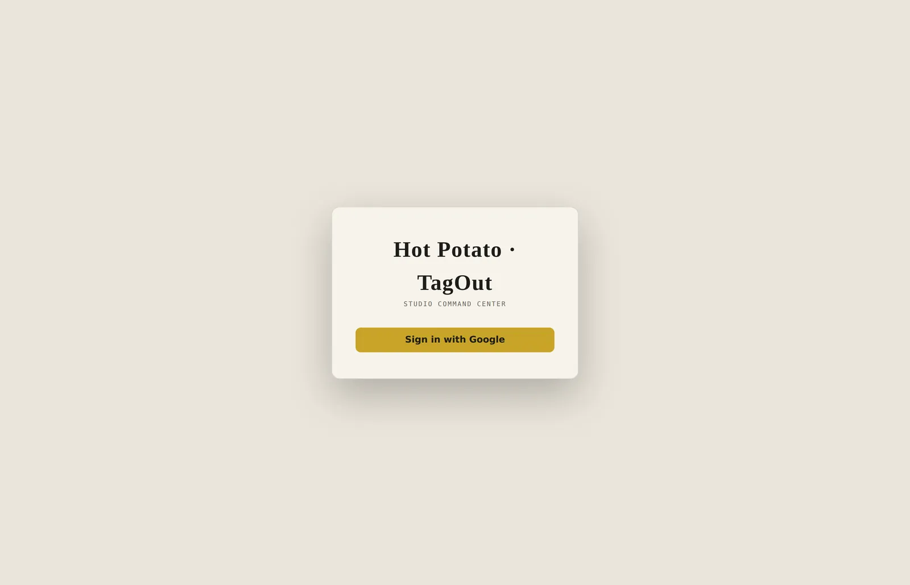

Hot Potato · TagOut
What is TagOut?
The internal command centre for the Hot Potato · TagOut project at Wild Alchemists — the single place where the project's finances, tasks, bugs, calendar, team and production board live.
The previous Command Center was a single-file app that had grown past the point where anyone could safely change it. The rebuild keeps the behaviour and the data shape, and replaces the structure — including the studio's Fossils Kanban, which becomes a first-class production section rather than a separate tool.
Four layers, dependencies only point down
The whole point of the layering is a rule you can check: presentation depends on the application layer, which depends on the domain, which depends on infrastructure. Nothing lower reaches up, and the UI never imports the Firebase SDK.
Components go through services, services go through one Firebase module, and that module is the only place the SDK is ever constructed. Path aliases mark the boundaries, so a wrong-direction import is visible in the import line itself rather than hidden three files deep.
The schema is the source of truth
Every read from Firestore is parsed through a Zod schema before it reaches anything else, so malformed data fails at the boundary instead of surfacing as a blank panel somewhere deep in a component. The types the app uses are inferred from those schemas — there is no second, hand-written definition to drift out of sync.
A project is one Firestore document holding the whole project state. That mirrors the original Command Center exactly, which is what lets the two interoperate while the studio migrates rather than forcing a cut-over.
Security is deliberately not in the UI. The in-app allowlist is a nicety; the real boundary is the server-enforced rules file, because that is the only one a user cannot edit. The Firebase web keys are public by design and are not treated as secrets.
Modules & engineering
- Overview, Kanban, Bugs, Calendar
- Team, Financials, Budget
- Bases, Changelog, Auth
- One folder per module, one pull request each
- Bilingual throughout — Spanish and English via i18next.
- Vitest and React Testing Library; 21 of the 117 source files are tests.
- ESLint flat config, Prettier, typecheck and tests all run in GitHub Actions.
- Firestore and Auth emulators for local development, so nobody develops against live data.
Why there is only one screenshot
The repository is private and the app sits behind a Google sign-in restricted to the studio's accounts, so the only screen that can be shown publicly is the gate itself. Happy to walk through the rest of it in a conversation.